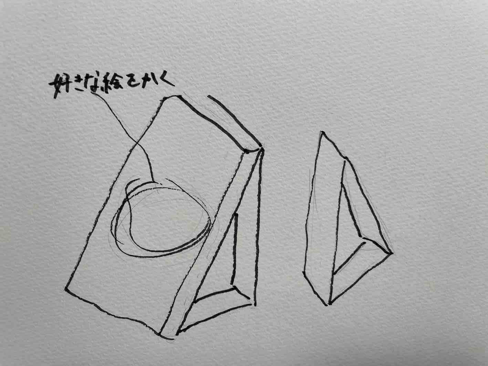
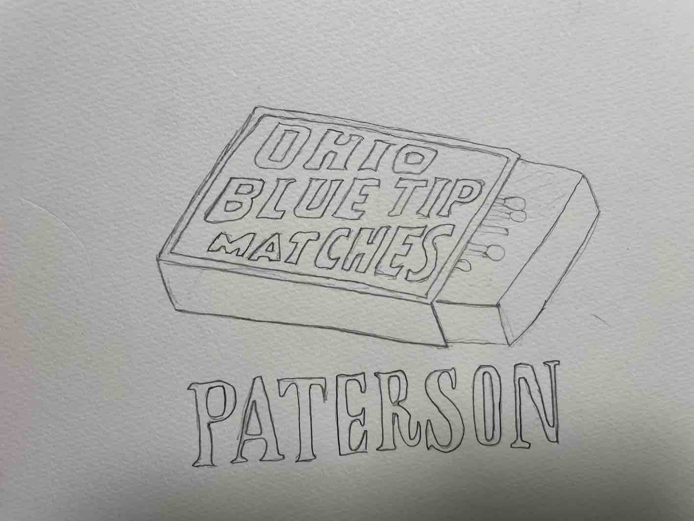
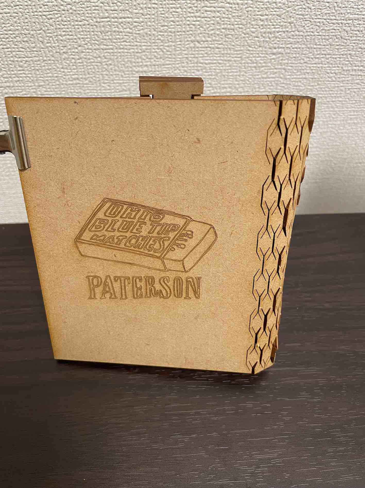
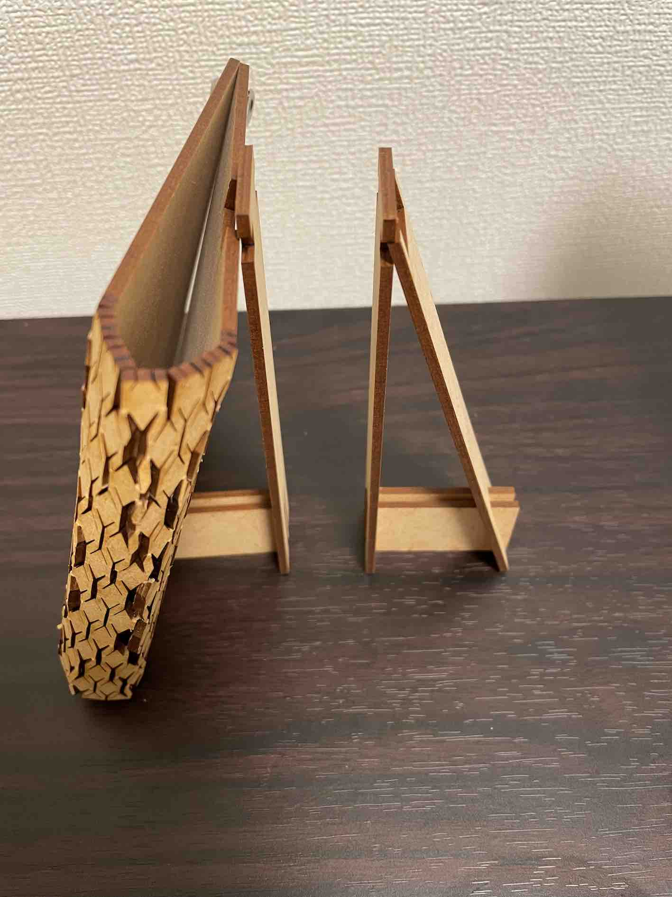
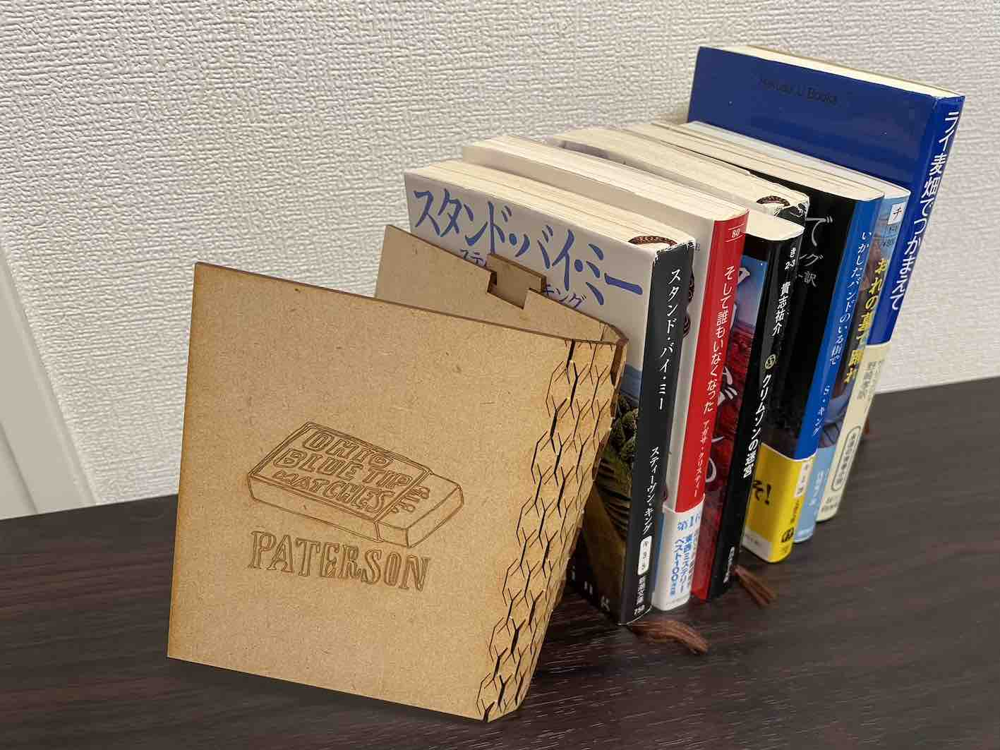
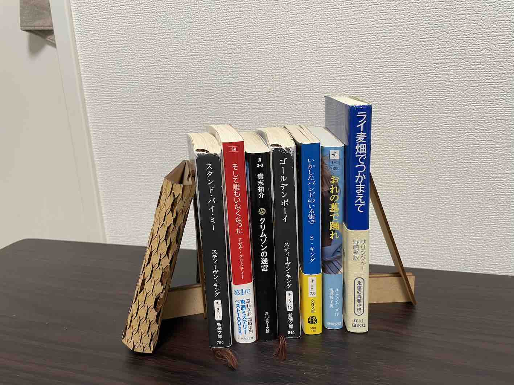
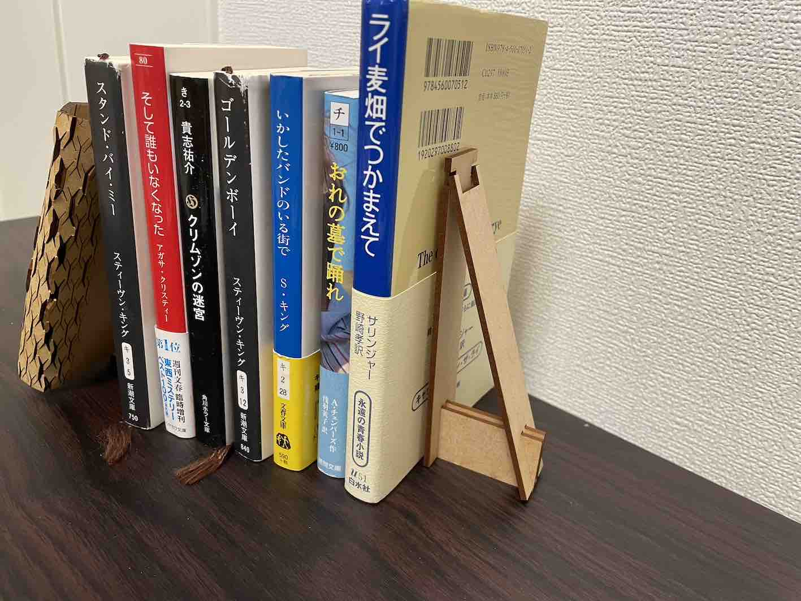

第2回課題
1.タイトル
パター本
2.構想段階の手書きスケッチ
 
3.作品の画像
 
  
4.設計ファイル
本体のdxsファイル
折れるところのdxfファイル
5.作品の説明
映画『パターソン』に出てくるマッチ箱をデザインしたブックエンド。
映画『パターソン』公式サイト
6.何故この作品を作ろうという想いに至ったか
ブックエンドは面白いデザインのものが多いが、本の形をしたブックエンドは見たことがなかったので制作しようと考えた。
表紙のデザインは、自分の好きな映画や小説に関するデザインにしようと考え、最終的に『パターソン』のデザインに決定した。
7.制作プロセス
初めはフュジョンで本体の形を作成した。
次に表紙のデザインを手書きでスケッチし、写真を撮り、Inkscapeで写真をdxfファイルにした。
Inkscape ダウンロード
本の背表紙の部分は授業資料で紹介されていたページを参考にした。
Living Hinge
8.反省
背表紙の曲がる部分が思ったように上手く曲がらなかった。他のパターンや大きさなどをもっと試して改良したい。
上の組み合わせる部分がうまくはまらなかった。